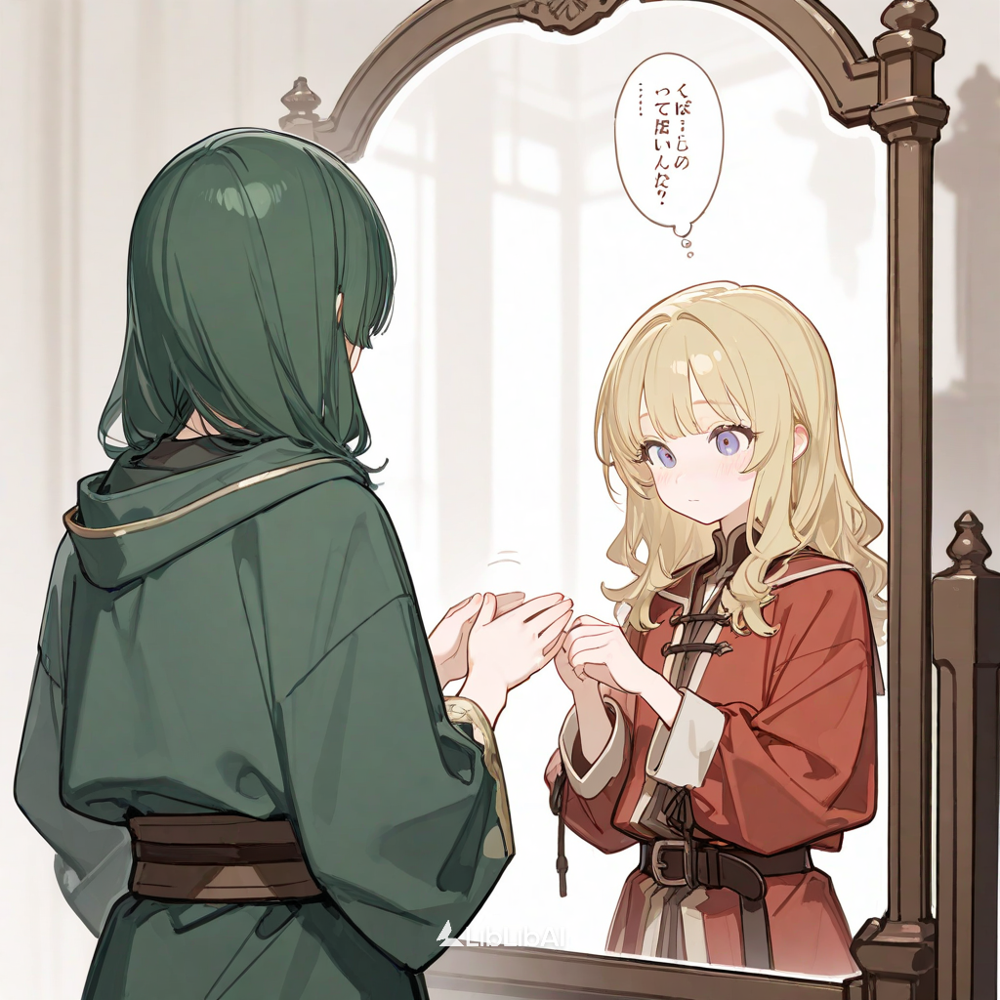

LOCAL 镜边的放映室 · 只属于你
把喜欢的番剧，
把喜欢的番剧，
收进镜边的抽屉里
视频上传即入库，自动归入所属系列；一个系列一张总封面，随时可以换。播放、下载、评论、点赞与收藏，都安静地留在你自己的浏览器里。
0在库系列
0收录视频
0我的收藏

くぱ…どのって奥いんだ…
a place beside the mirror
上传即入库MP4 / WebM · 可多选
原画播放本地直读 · 可拖动
系列一张封面随时更换
本地存储--
01
最近更新
视频库 Series Library
还没有匹配的系列
换个筛选条件，或者上传第一支视频。
02
—